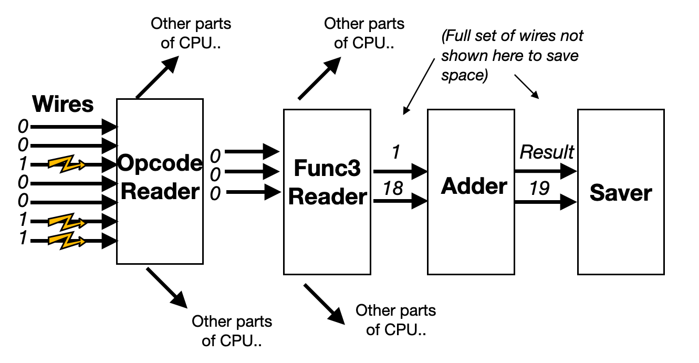

What are computer languages?
Computer Software is be written in a multitude of languages. These languages are designed for different purposes
such as solving complicated math problems, running very fast, or working with large sets of data (some are even
novelty languages just to make you laugh). Programmers choose their language based on what they are building, or
they reach for the one they are most skilled in.
However, every computer only knows one language - and that language is spoken by very few programmers.
Machine Code
Inside the CPU is a series of simple electrical components. Each performs a routine task which it cannot deviate
from. Zeroes do this, ones do this. Machine code is the language composed of zeroes and ones which provides the
exact sequence of data to traverse perfectly through the CPU.
Some examples of machine code languages: ARM, RISC-V, MIPS, x86
Let's look at one example of a machine code instruction in the language RISC-V:
Human Math: Y = X+1
Computer Math: 00000000000110010000100110010011
The computer command pretty confusing to humans. Let's break it up and try to understand it:
00000000000110010000100110010011 - Original Instruction
<immediate><save><func3><destination><opcode> - Pattern
000000000001 10010 000 10011 0010011 - Broken into segments of the pattern
000000000001 - Immediate (Number to use in calcuation)
10010 - Save Register (variable to use in calculation)
000 - Func3 (Which math operation to perform)
10011 - Destination Register (where to put the result)
0010011 - Opcode (Which category of computer commands)
let's switch those binary numbers into decimal to make them a little easier to read:
1 - Immediate (Number to use in calcuation)
18 - Save Register (variable to use in calculation)
0 - Func3 (Which math operation to perform)
19 - Destination Register (where to put the result)
19 - Opcode (Which category of computer commands)
In english, this means:
take the number 1, and our variable called 18, then use the command 19-000 (which stands for addition) and
store it in our variable called 19.
Inside the computer, the 'opcode'(19) and 'func3'(0) are used to navigate to the correct part of the CPU - in
this case it's the part of the CPU used for addition. Then, the variable IDs (variables in the CPU are called
'registers' and are identified by number instead of by name) are used to pull up the values for X and Y. The
number 1 is then added to what's in 18 (the variable X) and stored into 19 (the variable Y).

As we can see, the binary is transmitted across wires using electricity. Those electrical signals help direct
the computer to send the data to the correct location (in this case, the adder). The computer mindlessly does
its task, just like any other machine would.
Assembly
This binary is pretty difficult to read, that's why humans developed a shorthand called 'assembly'. Assembly is
a more human-readable notation for binary commands - kind of like nicknames. There is always a 1x1 relationship
between assembly and binary.
Some examples of assembly languages: The same ones as above :) assembly is just shorthand for machine
code.
Here is that same command from before, written in assembly:
00000000000110010000100110010011 - Machine Code Command
addi s2, s1, 1 - Assembly Command
addi corresponds to both the opcode and func3, s2 and s1 are the registers/variables, and 1 is the number being
added.
To write a program in machine code, a programmer typically writes the whole thing in assembly and then runs a
special program called an 'assembler'. The assembler takes assembly and turns it into machine code.
High Level Languages
Most programmers never work in either machine code or in assembly. There are a bunch of good reasons for this:
- Assembly is complicated and error prone.
- Programs written for the CPU are very long, every step needs to be carefully described.
- Software designed for one computer can't run on another kind of computer, it needs to be re-written for
each CPU brand.
Because of all this, people typically write in languages known as 'high level languages' (also known as HLL's).
These are special dialects which are designed for humans, not computers. If you were to give a high level
language to a computer, nothing would happen.
Some examples of HLLs: Python, C++, Javascript, Matlab, Go
To actually execute a HLL, you need to run a special program which translates the language into machine code. If
the translation is run ahead of time (like a translated book) it's called a 'compiler', if the translation
happens in real time (like a diplomat translating a speech at the UN) it's called an 'interpreter'.
Interpreters are so advanced, they write machine code better than any human could - making exceptionally fast
and reliable programs. Compiled programs are especially speedy because the compiler can write out everything in
advance, and look ahead to take shortcuts.
Conclusion
This was a pretty dense essay. Let's take a second and summarize the major points we discussed:
- Inside of every computer is a CPU. CPUs come in a number of different 'brands'.
- Different types of CPUs know different languages.
- These CPU languages are known as 'machine code', which is a series of binary numbers controlling the
different switches and wires inside the computer
- Machine code is hard to write, so programmers write in a slightly easier to read notation called
'assembly', and then run an assembler program to turn it into machine code.
- Assembly is still pretty complicated too. So programmers made high level languages (HLLs)designed for
humans, which are much easier to understand.
- Programmers run either interpreters or compilers on HLLs to turn them into machine code.
Almost nobody writes in assembly anymore (except if you are doing projects like gameboy rom development!), and
those that do have a very good reason for it. However, knowing how machine code works helps make other parts of
the computer make sense. ( For example - if you are a C/C++ programmer: pointers correspond to memory addresses
the CPU must open through an immediate value).
In our next section, we will discuss the sequence of events inside a CPU - how machine code commands actually
WORK!
<- Back to How Do Computers Work